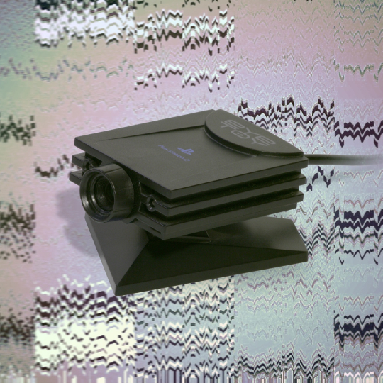

Этот год был странным во многих отношениях, но были в нем и хорошие моменты. Наложившиеся друг на
друга
обстоятельства (освободившееся от встреч с друзьями время и выход сразу нескольких отличных видеоигр
в
начале года) для многих стали поводом обзавестись консолью. А для нас вместе с PlayStation —
причиной
вспомнить, как начиналась эпоха домашних консолей, почему современные видеоигры недалеко ушли от
кинематографа и зачем разработчикам делать главным героем женщину и разрешать игрокам грабить банки.
1994
1996
1998
2000
2002
2004
2006
2008
2010
2012
2014
2018
2020
1994
1994
Первая Sony PlayStation вышла на пике популярности Sony: к тому времени компания только начала
снимать
кино, владела правами на песни Майкла Джексона и выпускала топовые плееры Sony Walkman. От
конкурентов
консоль отличал формат игр. Их выпускали на CD-дисках, что позволяло делать более красочные и
сложные
игры, которые требовали много памяти.

1996
1996
Одним из первых хитов новой консоли стал Crash Bandicoot — обаятельный платформер о рыжем
бандикуте
(так называется реальный вид австралийских сумчатых барсуков; правда, Крэш в игре — результат
генетического эксперимента). Оригинальная трилогия для многих стала синонимом счастливого
детства и
символом девяностых, поэтому получила в этом году продолжение — Crash Bandicoot 4: It’s About
Time.
1997
1997
Final Fantasy XVII открыла для западных игроков жанр jRPG — японских ролевых игр, которые
отличает
интересный, сравнимый с хорошей книгой (или аниме) сюжет, обилие ярких персонажей и
складывающиеся в
общую картину цепочки квестов. Final Fantasy была важна и по другой причине: она показала, что
видеоигры — это развлечение для взрослых. Здесь не было веселых мультяшных персонажей, а
прохождение
требовало терпения (игра была такой большой, что публиковалась на трех дисках).
1997
1997
К началу года уже 52 ночных клуба Великобритании имели PlayStation rooms — комнаты, специально
оборудованные для игры в Tekken или Dance Dance Revolution. Клубам это помогало задерживать
посетителей надолго (вы когда-нибудь пытались уйти после одной-двух стычек в Tekken?), а Sony —
выйти за пределы гейм-культуры и проникнуть туда, где люди просто хорошо проводят время: на
музыкальные фестивали, вечеринки и в кафе.
1998
1998
Первые консоли PlayStation появляются и в России. А с ними — и PlayStation Magazine, независимый
журнал о новинках игровой индустрии. С новостями и демоверсиями игр для комплектных дисков
помогала
сама Sony. Кроме слухов, инсайтов и анонсов, в журнале можно было найти интересные статьи об
истории
разных жанров видеоигр и, конечно же, обзоры на новинки.
1998
1998
«Кодзима — гений». Мем о японском геймдизайнере Хидео Кодзиме зародился в 2014 году, но
запустить
его стоило куда раньше: в 2008, когда вышла первая часть Metal Gear Solid. Кодзима неоднократно
признавался в своей любви к кино, и это вылилось в игры этой серии: отсылки к известным
произведениям кинематографа («Джеймс Бонду», «Космической одиссее», «Побегу из Нью-Йорка»)
встречаются в них регулярно. Отдельно стоит отметить ту грань между серьезностью и абсурдом,
которая
отличает игры серии. Где еще можно привязывать овец к воздушным шарам и отправлять в сторону
военной
базы...
2000
2000
Новая PlayStation 2 стала первой консолью с поддержкой USB и DVD (а это значит, еще больше места
для
сложной графики и закрученных сюжетов). Играть с друзьями можно было по сети, а для управления
предлагали уже привычный контроллер с фирменными кнопками Sony: кнопка с треугольником
обозначала
точку обзора, квадратом — игровое меню, а крест с кругом — «да» и «нет» соответственно.
2001
2001
Провокационный сюжет и грамотное использование саундтрека сделали GTA III самой продаваемой
игрой
2001 года. Более того, ее успех наглядно показал, что игры для взрослой аудитории, в которых
игроку
позволяют делать то, что в реальной жизни ему и в голову не придет, могут собрать хорошую кассу.
Некоторые эксперты считают, что именно с GTA III начался взлет open world игр, в которых спектр
действий не ограничен главным сюжетом.
2003
2003
Игровая камера EyeToy заложила основы для игр с дополненной реальностью: она могла отслеживать
движения игрока и выводить его изображение на экран.

2004
2004
«Нет ничего, что ты не мог бы делать в Сан-Андреас», — вспоминает о самой популярной игре в
серии
GTA: San-Andreas один из пользователей Reddit. Как выяснилось вскоре после выхода игры, это
действительно было так: в скрытых файлах игроки обнаружили «квест», который позволял главному
герою
продолжить свидание с девушкой в совершенно недетском контексте. Модификация получила название
«Горячий кофе», а игра — наклейку «Только для взрослых».
2004
2004
Караоке — один из самых популярных в Азии видов досуга. Поход в караоке-клуб многим заменяет
вечер с
коллегами в баре в конце тяжелой недели и считается отличным способом поднять боевой дух
коллектива.
В Японии или на Филиппинах караоке-машина в обычном доме не редкость, и родители поют вместе с
детьми. Поэтому неудивительно, что в 2004 году для PlayStation вышла караоке-игра SingStar, в
комплекте с которой шла пара микрофонов. Российская версия включала в себя хиты Стаса Пьехи,
Лолиты,
Влада Топалова, «Танцев минус» и «Чая вдвоем».
2005
2005
После девяти лет успеха оригинальную PlayStation сняли с производства, чтобы уступить мощности
заводов новой консоли. Она ненадолго вернулась в 2018 году к 24-ой годовщине PlayStation в виде
облегченной версии — PlayStation Classic. Комплект включал контроллер и 20 предустановленных
игр: от
Tekken 3 до Metal Gear Solid.
(ノ・・)ノ
(ノ・・)ノ
Лучшие игры для PlayStation 2 становились «платиновыми». Чтобы попасть в платиновую серию, игра
должна была продать 400 тысяч копий в год релиза. Всего статуса платиновых удостоилось 226 игр
для
PS2.
2005
2005
PlayStation 2 стала первой консолью, проданной в количестве 100 миллионов устройств — более
того,
этой цифры она достигла быстрее всех конкурентов.
2005
2005
PSP стала первой портативной консолью Sony и пережила пять реинкарнаций: Fat, Slim & Light,
3000, Go
и Street — пока не была снята с производства в 2014 году. Кроме собственно игр, она позволяла
слушать музыку и выходить в интернет, что для мобильного устройства (еще и игрового) тогда было
большой редкостью.
2006
2006
LocoRoco (и вышедший годом позже Patapon) стала одним из редких оригинальных тайтлов PSP.
Жизнерадостная головоломка с очаровательными персонажами и милой музыкой, она оставила после
себя
много подражателей (в том числе, в неожиданных местах).
2007
2007
Новая PlayStation 3 сменила DVD на BluRay и получила беспроводной контроллер. Игры для нее можно
было покупать не только на дисках, но и онлайн — годом раньше компания запустила PlayStation
Network
и PlayStation Store, которые работают по сей день. С их помощью играть онлайн с друзьями, у
которых
есть аккаунт, стало еще проще.

2008
2008
История про вязаного человечка с говорящим именем Сэкбой (Sackboy) — Little Big Planet —
получилась
такой обаятельной, что игра получила премию BAFTA в номинации Artistic Achievement. И такой
популярной, что со дня на день получит продолжение — «Сэкбой: Большое приключение».
2009
2009
Новая конфигурация PlayStation 3 — Slim — дала консоли новую жизнь. Она была тише и меньше
оригинала, и потребляла меньше энергии, благодаря чему за первые же три недели после начала
продаж
разошлась тиражом более миллиона экземпляров.
2010
2010
Управление жестами (и даже ладонью) сейчас кажется привычным делом, но в 2010 году контроллеры
PlayStation Move казались диковинкой. По сути, они открывали игрокам VR — игры в виртуальной
реальности, где взмахи руками убивали врагов на экране, резали фрукты или заставляли героя
прыгать.
2011
2011
В 2011 году на смену PSP пришла PlayStation Vita — портативная консоль с сенсорным экраном.
Дизайном
PS Vita занимался Такаси Согабэ — автор оригинального Sony Walkman. Игры для этой платформе
выходят
и сейчас, а в некоторые тайтлы и вовсе можно играть по очереди: то на большой консоли (PS 3 или
4),
то на портативной.
2013
2013
«Одни из нас» — игра о выживании в условиях пандемии — стала безусловным хитом 2013 года. А ее
продолжение, вышедшее в 2020 году, вновь подняло вопрос о роли женских персонажей в играх. В
отличие
от героинь нулевых, Элли удается быть сильной, не одеваясь при этом в короткие шорты и кроп-топ,
за
что игра получила дополнительные очки даже от неигровых медиа и блогеров.
2013
2013
Впервые в истории продажи новой консоли, PlayStation 4, стартовали в России одновременно с
остальным
миром — в ноябре 2013 года. Спрос россиян на консоли стабильно рос до кризисного 2014 года — во
многом благодаря огромному выбору игр, рассчитанных на взрослую аудиторию: с кинематографичным
сюжетом и живой графикой. А в 2020 году, благодаря режиму самоизоляции, не только не упал, но и
вырос в четыре раза (на PlayStation — в 14 раз).
2015
2015
С развитием графики растет популярность викторианских экшнов: мрачноватых наполовину мистических
игр, вдохновленных книгами не то Брэма Стокера, не то Говарда Лавкрафта. Яркий образец этого
жанра —
Bloodborne — в 2015 году журнал «Игромания» назвал «Ужасами года».
=(^ᴗ^)=
=(^ᴗ^)=
На новом контроллере DualShock 4 была кнопка «Поделиться» — она позволяла, в том числе,
расшерить
сохраненное видео игры или скриншот. Отчасти это дань культуре стриминга: как раз в это время
запущенный в 2011 году Twitch начал собирать 45 миллионов уникальных пользователей в месяц (а то
и
больше).
2017
2017
У Horizon Zero Dawn были все составляющие для грандиозного успеха: сильная главная героиня (что
снова возвращает нас к дискуссии о роли женских персонажей в современных видеоиграх),
постапокалиптический мир, населенный рободинозаврами и геймплей, позволяющий открывать этот мир
в
своем ритме. Horizon Zero Dawn стала самой продаваемой игрой в Великобритании и получила
несколько
десятков престижных наград: за сценарий, звук, дизайн и даже актерскую игру.
2019
2019
Релиз прошлого года Death Stranding сейчас кажется пророческим: в постапокалиптическом будущем
США
игроку предстоит надеть форму курьера и связать друг с другом изолированных людей.